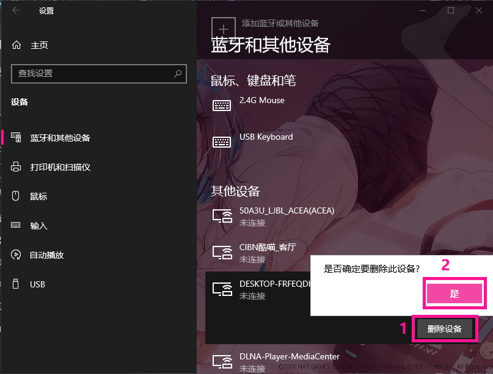

起因
今天打开设备管理器时发现一个叫做我的小电视的软件设备在不断刷新设备管理器
分析
它这么不断刷新肯定会影响我的电脑性能啊,于是开始分析它这么做的原因:
从名字可以得出它是局域网内的智能电视设备上的app
既然是电视上的app那么就好说了:
一般电视app都会有投屏功能,而这个功能呢又会向局域网内不断发送数据包
以检测局域网内的其他设备是否支持投屏.
🥚是,windows它不知道啊,它会傻傻的不断接收这些数据包并作为软件设备安装
解决
既然知道了问题的原因,那么就好解决了
网上的解决方案:
防火墙/安全软件屏蔽局域网电视ip
禁用network connected devices auto setup服务
关闭网络发现
可以试试,也可以直接用我的解决方案
因为我很懒所以我并没有使用上述方案,而是使用了一个简单粗暴的方案:
按下 +I 键打开设置
点击设备,在其他设备里找到并点击
我的小电视,删除即可 
因为我已经删掉了就随便用了个设备做例子.
当然你也可以删掉没用的设备,不过乱删出了问题我可不负责 (￣_,￣ )
现在打开设备管理器,发现我的小电视已经消失,同时设备管理器不再不断刷新.问题解决.